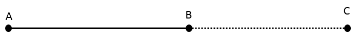
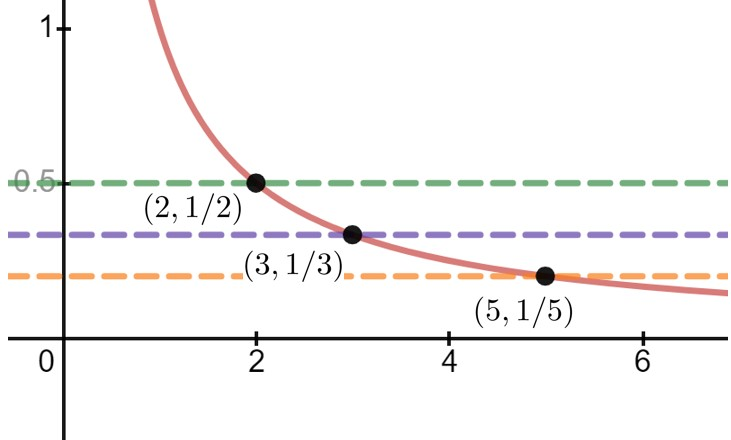

Chapter 17 Formal Limits
.\ .\ .\ in becoming rigorous, mathematical science takes a character so artificial as to strike everyone; it forgets its historical origins; we see how the questions can be answered, we no longer see how and why they are put.―Henri Poincar\’e (\(1854-1912\)) 1
We began our treatment of limits in Chapter 12 informally because it can take time to develop a mindset appropriate to a thorough understanding of limits. However, by proving theorems using properties of limits which we have not yet shown to be true we’ve left a logical hole in the proofs of nearly every theorem, lemma, and corollary we’ve stated. Bishop Berkeley would be most displeased.
It is time to fill those holes.
Loosely speaking, we know that if, as \(x\) gets ``closer and closer’’ to some real number \(a\text{,}\) the function \(f(x)\) gets ``closer and closer’’ to \(A\) then \(\tlimit{x}{a}{f(x)}=A\text{.}\) This phrase ``closer and closer’’ is the source of the logical holes we need to fill.
\begin{wraptable}[]{r}{1.7in} \vskip-4mm \centering \vskip1mm \begin{tabular}{c|c} \hline \(x\)\amp \(f(x)\) \(1.5\)\amp \(4.999\) \(1.4\)\amp \(4.999\) \(1.3\)\amp \(4.999\) \(1.2\)\amp \(4.999\) \(1.1\)\amp \(4.999\) \(1.01\)\amp \(4.999\) \(1.001\)\amp \(4.999\) \(1.0001\)\amp \(4.999\) \end{tabular} \end{wraptable}
To illustrate what can go wrong with the intuitive approach to limits that we’ve used so far, consider the limit \(\limit{x}{1}{f(x)}\text{,}\) when
\begin{equation*}
f(x) =\frac1\pi\inverse\tan(10^8(x-1)).
\end{equation*}
To get a sense of what this function looks like when we let \(x\) get ``closer and closer’’ to \(1\) we’ve tabulated a few values of \(f(x)\) for \(x\) near \(1\) in the table at the right. Seems pretty convincing doesn’t it? Can we conclude from this table that
\begin{equation*}
\limit{x}{1}{\frac1\pi\inverse\tan(10^8(x-1))} = 4.999? \text{ (Or
maybe that it is equal to }5\text{?})}
\end{equation*}
Sadly, no. In fact, since \(f(x)\) is continuous this limit is equal to zero because
\begin{equation*}
f(1) =
\frac1\pi\inverse\tan(10^8(1-1))% =\frac1\pi\inverse\tan(10^8(0))
=\frac1\pi\inverse\tan(0)=0.
\end{equation*}
The problem with our example is that none of the \(x\) values in the first column is close enough to \(1\text{.}\) Sure, the numbers \(1\) and \(1.0001\) are very close together. But to evaluate this limit we don’t just want to get close, we want to get close enough. For this particular function\aside{It should be clear that we’ve contrived this function so that we could make this point. It is unlikely that it is useful for any other purpose.} we’d have to get much closer to \(1\) before we start to see the values of \(f(x)\) getting close to \(0\text{.}\)
And that’s the problem. The nature of the function we’re taking the limit of must be taken into account when we decide what ``close enough’’ means for any particular limit. This isn’t as bad as it sounds, but as always precision is crucial. We need a definition of limit that doesn’t depend on the nature of the function we’re investigating. A useful definition will also recover the Differentiation Rules in a manner that even Bishop Berkeley would agree is valid.
We will begin with limits ``at infinity’’ because, paradoxically, these are often the easiest to understand. As we proceed through examples the question you want to keep in the back of your mind is, ``For this problem how close is close enough?’’
Section 17.1 Getting Around Infinity
It all comes down to understanding infinity, both the infinitely small and the infinitely large. Or rather, it comes down to realizing that we do not understand infinity at all. So, whenever an apparently ``infinite quantity’’ appears we will have to work with and explain it in finite terms. This might sound impossible, but it turns out to be merely difficult.
This approach is within well established mathematical tradition. From the time of the ancient Greeks until the sixteenth century, infinity was carefully excluded from serious mathematical consideration. It was the successful exploitation of the infinitely small (infinitesimals) by Galileo and others that eventually forced mathematicians to study infinity seriously.
Today we tend to conceive of a straight line in infinite terms; as extending infinitely far in two opposite directions. But when Euclid 2 wrote his geometry text \pubtitle{The Elements 3 }, he very carefully avoided allowing the existence of an ``infinite line.’’ For Euclid a straight line was what today would be called a line segment: the shortest path between two points.
But this restriction immediately caused problems for Euclid. For some of his constructions he needed to be able to extend his line segment. In modern mathematics this is not a problem since we allow lines to extend infinitely far in either direction. So we’d just move to a new point on the line wherever it needs to be.

But when Euclid specified a line segment \(\overline{AB}\) he meant that the points \(A\) and \(B\) were the endpoints of the line segment. To avoid infinite lines he extended the line segment \(\overline{AB}\) by some definite amount out to a point \(C\text{,}\) thereby obtaining a new segment \(\overline{AC}\text{,}\) which -- and this is the point -- is still finite in length. In this way Euclid explicitly allowed line segments to be extendable to any finite length without ever allowing an infinitely long line.
Subsection 17.1.1 The Infinitely Large
We want to ask, and answer, the question \begin{center} \begin{minipage}{.7\textwidth} \it What number does \(y\) get close to if \(y=\frac1x\) and we allow \(x\) to grow infinitely large? \end{minipage} \end{center} as precisely as we can without invoking the notion of the infinitely large. Does this rephrasing work for you? \begin{center} \begin{minipage}{.7\textwidth} \it If \(y=\frac1x\text{,}\) what does \(y\) get close to as \(x\) grows larger and larger? \end{minipage} \end{center} This seems to be better. We have side-stepped the issue of the infinitely large by saying ``larger and larger.’’ But unfortunately this rephrasing of the question changes its meaning. To see what we mean, think of \(x\) as the radius of a balloon which we want to inflate as much as we possibly can. Suppose we know that when the radius of the balloon is \(8\) it will pop. To avoid popping our balloon, we blow in enough air during the first second to expand the radius to \(x(1)=4\text{.}\) In the next second we expand the radius to fill half of the remaining distance to \(x(2)=6\text{.}\) In the third we repeat the process, expanding it to \(x(3)=7\text{.}\) And we continue in this fashion. At each second the radius of our balloon expands to half of the remaining distance to \(8\text{.}\)
Clearly the balloon’s radius grows larger each second, so \(x\) grows ``larger and larger’’ as required. But the intent of our original question was for \(x\) to become ``infinitely large,’’ not for \(x\) to remain smaller than \(8\text{.}\)
And there is nothing special about \(8\text{.}\) If \(x\) moves half of the distance to \(16\) each second, or halfway to \(32\text{,}\) or even if it moves halfway to \(1,048,576\) at each step we have the same problem. In each case \(x\) is growing ``larger and larger’’ but it is not growing in a manner that reflects what we think we mean when we say that \(x\) is growing ``infinitely large.’’
Drill 17.2.
Suppose \(B\) is a positive real number, and that \(x(0)=0\text{.}\) Find a formula for \(x\) as a function of time \(t\) (in seconds), such that at each integer \(t>0\text{,}\) the distance from \(x(t)\) to \(B\) is half of the distance from \(x(t-1)\) to \(B\text{.}\)
In this situation \(x\) is said to be \term{bounded above} because there is an upper bound on how large \(x\) can be, despite the fact that \(x\) is growing ``larger and larger.’’
Recall that in ~ 12.1 we mentioned that the notation \(x\rightarrow\infty\) should be read aloud as ``\(x\) increases without bound,’’ so we rephrase our question as \begin{center} \begin{minipage}{.7\textwidth} \it If \(y=\frac1x\text{,}\) what does \(y\) get close to as \(x\) increases without bound? \end{minipage} \end{center}
Subsection 17.1.2 The Infinitely Small
The answer is very clear: \(y\) gets closer and closer to zero. But of course, the phrase ``closer and closer’’ is also too vague, and for essentially the same reason that ``larger and larger’’ is too vague to be useful.
Consider our balloon example again. If the radius, \(x\text{,}\) is constantly increasing but it is bounded above by \(8\) then \(x\) is certainly getting ``closer and closer’’ to \(8\text{.}\) But it’s also getting ``closer and closer’’ to \(9\text{.}\) And \(10\text{.}\) And any other number greater than \(8\text{.}\)
Again, it is not our conception of the problem that is the difficulty. It is the language we’re using. As before, we must choose our words more carefully.
To capture the idea that \(y=\frac1x\) gets ``closer and closer’’ to zero, without ever getting to zero let’s think this through, being careful to say exactly what we mean, no more, no less. To begin we ask, ``Is there a value of \(x\) which forces \(y\) to be less than, say \(1/2?\)’’
Keeping in mind that if \(a\lt b\) then \(\frac1a\gt\frac1b\text{,}\) if we need \(y\lt 1/2\) and \(y=1/x\) that means that \(1/x\lt 1/2\text{.}\) Solving for \(x\) we have \(x\gt 2\text{.}\)

So apparently any value of \(x\) strictly greater than \(2\) will guarantee that \(y\) is less than \(1/2\text{.}\)
Stop and think about that last sentence. Do you see that we’ve actually discovered more than the original question asked for? Our question was, ``Is there a value of \(x\) which forces \(y\) to be less than \(1/2\text{?}\)’’ But we’ve actually found all of them. We’ve found that if \(x\) is any number greater than \(2\) then \(y=\frac1x\lt \frac12,\) regardless of which number we use.
Can we make \(y\lt 1/3?\) Sure. Exactly the same analysis will show that if \(x\gt 3\text{,}\) then \(y=\frac1x\lt \frac13\text{,}\) or if \(x\gt 4\text{,}\) then \(y\lt 1/4\text{,}\) and so on.
Problem 17.3.
If \(y=\frac1x\) how large must \(x\) be in order to guarantee that
(a)
\(y\lt 1/5\)
(b)
\(y\lt 1/10\)
(c)
\(y\lt 1/100\)
(d)
\(y\lt 1/1000000\)
It should be clear that we needn’t have stopped at one millionth (\(10^{-6}\)). The same argument will show that if we want \(y=\frac1x\lt 10^{-10},\) we need \(x\gt 10^{10}.\) And that if we want \(y=\frac1x\lt 10^{-1000},\) we need \(x\gt 10^{1000}.\)
So, by an appropriate choice of \(x\) we can make \(y=\frac1x\) as close to \(0\) as we choose. To be a little more precise we say that we can make \(y\) arbitrarily close to zero, even if it never actually is zero. And this is what we really intended when we said that \(y\) gets ``closer and closer’’ (or ``goes to’’) zero.
This idea is exactly what the limit notation we introduced in
[cross-reference to target(s) "CHAPTERcha:limits-lhop-rule" missing or not unique] was intended to capture, so here, at last, are our question and answer precisely stated: \begin{center} \begin{minipage}{.8\linewidth} \noindent \underline{ Question:} If \(y(x)=\frac1x\text{,}\) what is \(\tlimit{x}{\infty}{y(x)}\text{?}\) \noindent \underline{ Answer:} \(\tlimit{x}{\infty}{y(x)}=0\text{?}\) \end{minipage} \end{center}Subsection 17.1.3 Convincing Berkeley
Is the use of these more precise terms enough to convince Bishop Berkeley?
Clearly not. If we were to show Berkeley that for \(y=\frac1x\) we can guarantee that \(y\lt 1/2\) by taking \(x\gt 2\text{,}\) his response would simply be, ``So what? How do I know you can make \(y\) less than \(1/3\text{.}\)’’ Nor will it be sufficient to show that we can make less than \(1/3, 1/4, 1/10000\) or any particular number. Berkeley will simply come back to us with a smaller challenge.

What we have to do is answer all possible challenges at once. This seems like a lot to ask until we think about it a bit. All we really have to do is suppose that we have some small, positive, unspecified number and show that we can find out how large \(x\) has to be to make \(y=\frac1x\) less than that number. For the sake of being definite we’ll give our number a name. It is traditional to call it\aside{Presumably for ``error’’ since \(\eps\) is the Greek version of the letter ``e.’’} \(\eps\text{.}\)
Suppose that \(\eps\gt 0\) and we want to figure out how large to make \(x\) to guarantee that \(y=\frac1x\lt \eps.\) If we want \(y\lt \eps\text{,}\) first substitute \(\frac1x\) for \(y\) giving \(\frac1x\lt \eps\text{.}\) Solve this for \(x\) (remember that if \(a\lt b\) then \(\frac1a\gt \frac1b\)) so that \(x\gt \frac1\eps\text{.}\)
Do you see the significance of this? Because we left \(\eps\) unspecified (other than requiring it to be positive), we’ve met all possible challenges. If the challenge is to make \(y\) less than \(10^{-1000000000}\) our response is, ``We’ve already done that. Just take \(\eps= 10^{-1000000000} \text{.}\) Repeating the computation above gives \(x\gt10^{1000000000} \text{.}\)
Now for some function \(f(x)\text{,}\) the statement \(\tlimit{x}{\infty}{f(x)}=0\) has the following precise meaning: \begin{center} \begin{minipage}{.8\linewidth} If for each \(\eps\gt0\) we can make \(f(x)\lt \eps\) by taking \(x\) sufficiently large, then we say that ``the limit as \(x\) approaches infinity is zero.’’ \end{minipage} \end{center}
To be sure, when we allow \(\eps\gt0\) to be arbitrary, but unspecified we skirt the edge of the infinitely small. But this is the point. If \(\eps\) is arbitrary then it can be as small as we need for it to be without ever being infinitely small. This is akin to Euclid allowing lines to be extended to any, unspecified\aside{Be careful. ``Unspecified’’ does not mean ``variable.’’ \(\eps\) is a particular, fixed number. We just don’t know which one it is.}, length without allowing them to be infinite in length. This is the idea underlying limits and limit notation.
Be aware that the meaning of the limit notation and the way we tend to speak about limits are inconsistent. This can present a lot of problems for the beginner. If we are speaking loosely, among friends, we would read this statement, \(\tlimit{x}{\infty}{\frac1x}=0\text{,}\) as follows: \centerline{``The limit of one over \(x\) as \(x\) goes to infinity is equal to zero.’’} This is a very poor way to express the idea we are trying to capture. To say that \(x\) ``approaches’’ infinity completely undercuts everything we’ve said about infinity so far because it treats infinity as if it is an actual number.
We now understand that \(\tlimit{x}{\infty}{\frac1x}=0 \) really means that as \(x\) increases without bound, \(1/x\) is getting arbitrarily close to zero but what we say is not what the notation means. That incongruity can be very confusing at first. In this text we will be very careful not to speak so casually. At least not until we have more experience with limits.
We have only begun, but this is enough for us to offer a first definition of the limit concept. We generalize slightly.
Definition 17.5. Positive Function With Limit Zero at Infinity.
Suppose \(f(x)\gt 0\) for all \(x\gt 0.\) Then we say that \(\limit{x}{\infty}{f(x)}=0\) if and only if for every \(\eps\gt 0\) we can find a real number \(B\) with the property that if \(x\gt B\text{,}\) then \(f(x)\lt \eps\text{.}\)
The parameter \(\overbrace{B \text{ is the lower bound that \)x\(has to exceed}}^{x \text{ is unbounded}}\) \(\overbrace{\text{ for }f(x) \text{ to be less than } \eps}^{\text{\)f(x)\(is arbitrarily close to zero}}\text{.}\) In our first example we had \(B=2\text{,}\) in our last we had \(B=1/\eps\text{.}\) Naming the lower bound like this gives us a concrete way to specify how large \(x\) has to be. To great extent finding \(B\) is the whole problem. This is easier to see in an example.
Example 17.6.
Show that if \(f(x)=\frac{1}{x^2},\) then \(\limit{x}{\infty}{f(x)}=0.\) As before take \(\eps\gt 0.\) Once epsilon is given\aside{Think of epsilon as being handed to you by Bishop Berkeley. You don’t get to control it, he does. Moreover all he will tell you about it is that it is a positive number.} your job is to find out how large \(x\) has to be to guarantee that \(f(x)=\frac{1}{x^2}\lt \eps.\) So we work the problem backwards. That is, we start with \(f(x)=\frac{1}{x^2}\lt \eps\) and solve for \(\eps\) to find that \(x\gt \frac{1}{\sqrt{\eps}}\text{.}\) So if we take \(B=\frac{1}{\sqrt{\eps}}\) when \(x\gt B=\frac{1}{\sqrt{\eps}}\) then
\begin{equation*}
f(x)= \frac{1}{x^2}\lt \eps.
\end{equation*}
Problem 17.7.
Use ~ 17.5 to prove that for each of the functions below \(\limit{x}{\infty}{f(x)}=0\text{.}\) That is, assume \(\eps\gt0\) is given and find a lower bound \(B\) such that if \(x\gt B\) then \(f(x)\lt\eps\text{.}\)
(a)
\(f(x)=\frac1{x^3}\)
(b)
\(f(x)=\frac1{x^4}\)
(c)
\(f(x)=\frac1{x^5}\)
(d)
\(f(x)=\frac1{x+1}\)
(e)
\(f(x)=\frac1{2x+1}\)
(f)
\(f(x)=\frac1{5x+7}\)
Subsection 17.1.4 Refining the Definition
[cross-reference to target(s) "DEFsecond-inad-limit-at-infinity" missing or not unique] works as long as \(f(x)\gt 0\text{,}\) but without this restriction it fails utterly, as our next example shows:Example 17.8.
Suppose \(f(x) = -2-\frac{1}{x}.\) Can you guess the value of \(\limit{x}{\infty}{f(x)}\text{?}\) Let \(\eps\gt 0\) be given. Then when \(B\) has any positive value, if \(x\gt B\) we have
\begin{equation*}
f(x) = -2-\frac1x \lt 0 \lt \eps,
\end{equation*}
and by ~ 17.5 we conclude that \(\tlimit{x}{\infty}{f(x)} =0\) since all of the requirements of our definition have been met (except, of course, \(f(x)\gt0\)). Of course, this is nonsense. As we have noted as \(x\) increases without bound \(\frac1x\) gets arbitrarily close to zero. So clearly \(\tlimit{x}{\infty}{f(x)}=-2\text{.}\) That we are able to ``prove’’ that \(f(x)\) goes to zero simply means that ~ 17.5 doesn’t capture everything we need. We need a more encompassing definition of a limit.
Based on our experience in
[cross-reference to target(s) "EXlimit1" missing or not unique] with \(f(x) = -2-\frac1x\text{,}\) what would you say needs to be changed in [cross-reference to target(s) "DEFsecond-inad-limit-at-infinity" missing or not unique] to allow \(f(x)\le0\) as well?The problem of course, is that if \(\eps\gt 0\) is given the statement \(f(x) \lt \eps\) doesn’t really capture the idea that \(f(x)\) is near the number zero, only that it is less than the number \(\eps\text{.}\) For example, \(-1000\) is less than \(\eps\) but it is nowhere near zero. What we need is a way to measure how far \(f(x)\) is from zero, regardless of whether in the positive or the negative direction.
That is exactly what the absolute value function measures. For example, both \(3\) and \(-3\) are the same distance from zero, the first one in the positive and the second one in the negative direction. That is \(\abs{3}=\abs{-3}=3\text{.}\)
We need to modify our definition so that the distance from \(y\) to zero is less than \(\eps\text{.}\) We want \(\abs{y}\lt \eps,\) not just \(y\lt \eps\text{.}\)
Definition 17.9. Zero Limit at Infinity.
Suppose \(f(x)\) is defined for all \(x\gt 0\text{.}\) Then we say that \(\limit{x}{\infty}{f(x)}=0\) if and only if for every \(\eps\gt 0\) we can find a real number \(B\) with the property that whenever \(x\gt B,\) \(\abs{f(x)}\lt \eps.\)
Example 17.10. First:.
Suppose \(f(x) = -\frac1{x}\text{.}\) We want to prove rigorously that \(\tlimit{x}{\infty}{f(x)}=0\text{.}\)
Scrapwork 17.1.
Let \(\eps\gt0\) be given.
As we did in Example 17.6 we find the bound \(B\) by working the problem backwards. We want to end with \(\abs{f(x)}\lt\eps\text{,}\) so that’s where we start. \begin{align*} \abs{f(x)}\amp \lt\eps \abs{-1/x}\amp \lt\eps. \intertext{Since we are only interested in what happens to \(f(x)\) as \(x\rightarrow\infty\text{,}\) we can safely assume that \(x\gt0\text{.}\) Therefore \(\abs{\frac{-1}{x}}=\frac{1}{x}\text{,}\) so} \frac1x\amp \lt\eps x\amp \gt\frac1\eps. \end{align*} Apparently to make \(\abs{f(x)}\lt\eps\) we need \(x\gt\frac1\eps\text{,}\) so we take \(B=\frac1\eps\text{.}\)
Proof.
Let \(\eps\gt0\) be given. Take \(B\gt\frac1\eps\text{.}\) If \(x\gt B\) then \begin{align*} x\amp \gt\frac{1}{\eps}. \intertext{Therefore} \frac1x\amp \lt \eps \intertext{and} \abs{-\frac1x}\amp \lt \eps. \intertext{So} \abs{f(x)}\amp \lt \eps. \end{align*} Therefore, by Definition 17.9 \(\tlimit{x}{\infty}{f(x)}=0\text{.}\)
This example displays the format of a limit proof that you need to adhere to. Below is an outline of the format. This is not a course in creative writing. Do not depart from this format.
- First:
- State the challenge, \(\eps\gt0\text{.}\)
- Second:
- Specify the bound \(B\) (usually in terms of \(\eps\)).
- Third:
- Show that if \(x\gt B\) then \(\abs{f(x)}\lt\eps\text{.}\)
- Fourth:
- State your conclusion.
Drill 17.11.
Identify which statements in the proof in Example\ 17.10 correspond to the first, second, third, and fourth parts of the format presented above.
Example 17.12.
Our previous examples and problems in this section were fairly simple as formal limit problems go. This one is more complex.
Use Definition 17.9 to show that \(\tlimit{x}{\infty}{\frac{1}{5x-x^2}}=0\text{.}\)
Scrapwork 17.2.
For a given \(\eps\gt0\text{,}\) we want to end up with
\begin{equation*}
\abs{\frac{1}{5x-x^2}}\lt\eps.
\end{equation*}
Part of what makes this limit more complex is that the part inside the absolute value \(\frac{1}{5x-x^2}\text{,}\) is not always positive. We need to deal with that somehow.
First, since we are only concerned about what happens as \(x\rightarrow\infty\) it is safe to assume that \(x\gt0\text{.}\) In that case, \(x=\abs{x}\text{.}\) Next, observe that if \(x\gt 5\) also, then \(x^2\gt 5x\text{.}\) Thus \(5x-x^2\lt0\text{,}\) so that \(\abs{\frac{1}{5x-x^2}}=\frac{1}{x^2-5x}\text{.}\) We could now work backwards like before, and solve for \(\frac{1}{x^2-5x}\lt\eps\text{.}\) This will work fine, but the Algebra gets very messy. Try it and see.
There is a sneaky way to do this that avoids some of the Algebra. Notice that \(\frac{1}{x^2-5x}=\left(\frac{1}{x-5}\right)\cdot\left(\frac1x\right)\text{.}\) Notice further that if \(x\gt6\text{,}\) then \(x-5\gt1\) so that \(\frac{1}{x-5}\lt1\text{.}\) Putting all of this together we we that for \(x\gt6\text{,}\) \begin{align*} \abs{\frac{1}{5x-x^2}}\amp =\abs{\frac{1}{5-x}}\cdot\abs{\frac1x}
\amp =\left(\frac{1}{x-5}\right)\cdot\left(\frac1x\right) \amp \lt 1\cdot\left(\frac1x\right)=\frac1x. \end{align*}
Thus to guarantee that \(\abs{\frac{1}{5x-x^2}}\lt\eps\) we need \(\frac1x\lt\eps\text{,}\) or \(x\gt\frac{1}{\eps}\text{.}\)
Proof.
Let \(\eps\gt0\) be given. Let \(B\) be the larger of \(6\) and \(\frac1\eps\text{.}\) If \(x\gt B\) then \(x\gt6\) so \(x-5\gt1\text{.}\) Therefore
\begin{equation*}
\label{eq:ProofPractice1}
\abs{\frac{1}{5-x}}=\frac{1}{x-5}\lt1.
\end{equation*}
Since \(x\gt\frac1\eps\gt0\text{,}\) we see that \(\abs{\frac{1}{x}}=\frac{1}{\abs{x}}=\frac1x\lt\eps\text{.}\) Thus
\begin{equation*}
\label{eq:ProofPractice2}
\abs{\frac{1}{5x-x^2}}=\abs{\frac{1}{5-x}}\cdot\abs{\frac1x}\lt1\cdot\frac1x\lt\eps.
\end{equation*}
Therefore by Definition 17.9,
\begin{equation*}
\limit{x}{\infty}{\frac{1}{5x-x^2}}=0.
\end{equation*}
Problem 17.13.
Explain carefully, and in detail, the reasoning that supports the claims made in
[cross-reference to target(s) "EQUATIONSeq:ProofPractice1" missing or not unique] [cross-reference to target(s) "ANDeq:ProofPractice2" missing or not unique].Notice that in Examples~\ 17.10 and~\ 17.12 the scrapwork was an essential part of the solution, but in the formal proof the results of the scrapwork were so abbreviated as to almost not be present. This is part of the formalism of mathematical writing. We try to make sure that everything that needs to be said is said --- and absolutely nothing more. In this instance in particular, we are not obligated to explain where the bound \(B\) came from, only that it works. It can take time to become comfortable with this presentation style.
Even with practice very few people can read a formal proof without doing the computations necessary to show that all of the claims made are actually true. Keep paper and pencil handy at all times to help you follow the argument.
Problem 17.14.
For each of the following show that \(\tlimit{x}{\infty}{f(x)}=0\text{.}\)
(a)
\(f(x)=\frac{1}{x+2}\)
(b)
\(f(x)=\frac{1}{x^2}\)
(c)
\(f(x)=\frac{1}{x^3}\)
(d)
\(f(x)=\frac{1}{x^3+2}\)
(e)
\(f(x)=-\frac{2}{x}\)
(f)
\(f(x)= \frac{2}{x^2}\)
(g)
\(f(x)= \frac{1}{5x-7}\)
(h)
\(f(x)= \frac{\sin(x)}{x}\) \hint{\(\abs{\sin(x)}\le1\text{.}\)}
[cross-reference to target(s) "DEFlimit-at-infinity-nearly-adequate" missing or not unique] only tells us what it means when the limit of some function as \(x\rightarrow\infty\) is zero. But as we observed in [cross-reference to target(s) "EXlimit1" missing or not unique] as \(x\) increases without bound \(f(x)=-2-\frac1x\) approaches \(-2\text{,}\) not \(0\text{.}\) We’ll need something more general, but all of the important ideas have been introduced. We generalize [cross-reference to target(s) "DEFlimit-at-infinity-nearly-adequate" missing or not unique] as follows.Definition 17.15. A Limit at \(+\infty\).
Suppose that \(L\) is a real number and that \(f(x)\) is defined for all \(x\gt 0\text{.}\) Then we say that
\begin{equation*}
\limit{x}{\infty}{f(x)}=L
\end{equation*}
if and only if for every \(\eps\gt 0\) there is a real number \(B\) with the property that whenever\aside{Notice that if \(L=0\) this reduces to Definition 17.9. } \(x\gt B,\) \(\abs{f(x)-L}\lt \eps.\)
Example 17.16.
Suppose \(f(x)=1-\frac1x\text{.}\) Intuitively, it is clear that \(\tlimit{x}{\infty}{f(x)}=1\) but we need to prove that this is so.
Scrapwork 17.3.
Suppose \(\eps\gt0\) is given. We need to specify a number \(B\) (probably in terms of \(\eps\)), with the property that if \(x\gt B\) then \(\abs{f(x) - 1}\lt \eps.\) So we will work backwards from this inequality.
\begin{align*}
\abs{f(x) - 1}\amp \lt \eps\\
\abs{\left(1-\tfrac1x\right) - 1}\amp \lt \eps\\
\abs{-\tfrac1x }\amp \lt \eps\\
\abs{x}\amp \gt \tfrac{1}{\eps}.
\end{align*}
Thus \(x\gt \tfrac{1}{\eps}\text{,}\) and it appears that \(\abs{f(x)-1}\lt\eps\) as long as \(x\) is greater than \(\frac{1}{\eps}.\) % Do you see that \(B\) can be any
Proof.
Let \(\eps>0\) be given. Take \(x>B=1/\eps\text{.}\) Then \begin{align*} \abs{\tfrac{1}{x}}\amp \lt \eps \abs{\tfrac{-1}{x}}\amp\lt \eps \abs{\left(1-\tfrac{1}{x}\right)-1}\amp\lt \eps \abs{f(x)-1}\amp\lt \eps. \end{align*} Therefore by Definition 17.15,
\begin{equation*}
\limit{x}{\infty}{f(x)}=1.
\end{equation*}
Example 17.17. label={ (\alph*)}.
In ~ 12.1 we approached the problem of finding a horizontal asymptote of \(f(x)=\frac{5x}{x+1}\) in the following highly intuitive manner, using the ``\(\approach{\infty}\)’’ notation.
\begin{equation*}
\limit{x}{\infty}{\frac{5x}{x+1}} =
\limit{x}{\infty}{\frac{5x}{x\left(1+\frac1x\right)}} =
\limit{x}{\infty}{\frac{5}{1+\frac1x}}=
\frac{5}{1+\frac{1}{\approach{\infty}}}=\frac{5}{1+0}=5.
\end{equation*}
So we see that this limit must be equal to five. To prove this rigorously, without referring to infinity, we use ~ 17.15
Scrapwork 17.4.
Let \(\eps\gt0 \) be given. As before we work backwards from our goal, \(\abs{\frac{5x}{x+1}-5}\lt\eps\text{.}\) \begin{align} \nonumber \abs{\frac{5x}{x+1}-5}\amp\lt\eps \nonumber \abs{\frac{5x-5(x+1)}{x+1}}\amp\lt \eps \nonumber \abs{\frac{-5}{x+1}}\amp\lt\eps \nonumber \frac{\abs{-5}}{\abs{x+1}}\amp\lt\eps. \intertext{As long as \(x\gt-1\) this is the same as } \frac{5}{x+1}\amp\lt\eps. \label{eq:LimAtInfExample1} \end{align} so we will stipulate that \(B\) (and therefore \(x\)) must be at least greater than \(-1\text{.}\) Solving
[cross-reference to target(s) "INEQUALITYeq:LimAtInfExample1" missing or not unique] for \(x\) we see that \(x\gt \frac5\eps-1\) also. So we take \(B\) to be the greater of \(-1\) and \(\frac5\eps-1\text{.}\) We capture this idea with the notation, \(B=\max\left(-1, \frac5\eps-1\right)\text{.}\)
Problem 17.18.
(a)
Show that we only need the condition \(B\gt\frac5\eps-1\) by showing that \(B\gt\frac5\eps-1\) implies that \(B\gt-1\text{.}\)
(b)
Suppose that \(\eps\gt0\) and \(B=\frac5\eps-1\text{.}\) Prove that if \(x>B\) then \(\abs{\frac{5x}{x+1}-5}\) \(\eps.\)
Problem 17.19.
(a)
Show that we only need the condition \(B\gt\frac5\eps-1\) by showing that \(B\gt\frac5\eps-1\) implies that \(B\gt-1\text{.}\)
(b)
Suppose that \(\eps\gt0\) and \(B=\frac5\eps-1\text{.}\) Prove that if \(x>B\) then \(\abs{\frac{5x}{x+1}-5}\) \(\eps.\)
Problem 17.20.
We want to give a rigorous proof that \(\tlimit{x}{\infty}{\frac{x^2+100}{4x^2}}=\frac14\text{.}\) Let \(\eps\gt0\) be given.
(a)
Do the scrapwork that shows that we must take \(x\gt B
= \frac{5}{\sqrt{\eps}}\text{.}\)
(b)
Show that if \(x\gt B = \frac{5}{\sqrt{\eps}}\) then \(\abs{\frac{x^2+100}{4x^2}-\frac14}\lt\eps.\)
Problem 17.21.
Do the scrapwork, and provide a rigorous proof of each of the limits below.
(a)
\(\tlimit{x}{\infty}{\frac{1}{x^{1/3}}}=0\)
(b)
\(\tlimit{x}{\infty}{\left({\frac{2}{x^3}-1}\right)}=-1\)
(c)
\(\tlimit{x}{\infty}{\left({\frac{2+x^3}{x^3}}\right)}=1\)
It should be clear how to define a limit at \(-\infty\text{.}\) All of the same issues of clarity and precision that we encountered before come up here as well. The only difference is that we have to change the sense of our inequalities to reflect that \(x\) is decreasing without bound.
Definition 17.22. A Limit at \(-\infty\).
Suppose \(f(x)\) is defined for all \(x\lt 0.\) Then we say that
\begin{equation*}
\limit{x}{-\infty}{f(x)}=L
\end{equation*}
if and only if for every \(\eps\gt 0\) we can find a real number \(B\) with the property that whenever \(x\lt B,\) \(\abs{f(x)-L}\lt \eps.\)
Problem 17.23.
Do the scrapwork, and provide a rigorous proof of each of the limits below.
(a)
\(\tlimit{x}{-\infty}{\frac{1}{x^{1/3}}}=0\)
(b)
\(\tlimit{x}{-\infty}{\left({\frac{2}{x^3}-1}\right)}=-1\)
(c)
\(\tlimit{x}{-\infty}{\left({\frac{2+7x^3}{x^3}}\right)}=7\)
Section 17.2 Limits at a Real Number
In the previous section we were focused on the relatively simple limits associated with horizontal asymptotes. But our goal is to use the limit in
[cross-reference to target(s) "DEFDerivative" missing or not unique] to prove that the Differentiation Rules we’ve been using are valid. To do that we will use the following precise, rigorous definition of a limit as \(x\rightarrow a\) where \(a\) is some real number.Definition 17.24. The Limit at a Point.
Suppose \(f(x)\) is a function, and that \(a\) is a real number. We say that
\begin{equation*}
\limit{x}{a}{f(x)}=L
\end{equation*}
if and only if for every \(\eps\gt 0\) there is a \(\delta\gt 0\) with the property that whenever \(0\lt\abs{x-a}\lt \delta\text{,}\) \(\abs{f(x)-L}\lt \eps\text{.}\)
Take particular notice of the fact that none of the limit definitions (
[cross-reference to target(s) "DEFlimit-at-posinfinity" missing or not unique] and [cross-reference to target(s) "DEFlimits-at-real" missing or not unique]) do not tell us how to compute the limit. They serve only to rigorously verify what our intuition says the limit should be.Section 17.3 Limit Laws (Theorems)
If we can prove each of the limit laws in Chapter 14 rigorously (i.e, using
[cross-reference to target(s) "DEFlimits-at-real" missing or not unique]) we will have provided a rigorous foundation for Differential Calculus. We will address these now.To prove the limit laws we will need to make extensive use of what is called the Triangle Inequality. We state and prove the Triangle Inequality here so that we can cite it as needed.
Theorem 17.25. The Triangle Inequality.
For any real numbers \(x\text{,}\) and \(y\text{,}\) \(\abs{x+y} \leq
\abs{x}+\abs{y}\text{.}\)
The proof of the Triangle Inequality relies on
[cross-reference to target(s) "EQAltDefAbsVal" missing or not unique]) from [cross-reference to target(s) "DIGRESSIONAbsoluteValue2" missing or not unique].Proof of the Triangle Inequality.
Clearly \(-\abs{x}\leq x \leq \abs{x}\) and \(-\abs{y}\leq y \leq
\abs{y}.\) Adding these together we have \begin{align*} -\abs{x}-\abs{y}\amp\leq x+y\leq \abs{x}+\abs{y} \underbrace{-\left(\abs{x}+\abs{y}\right)}_{-B}\amp\leq \underbrace{x+y}_A \leq \underbrace{\abs{x}+\abs{y}}_{B}. \end{align*} so by
[cross-reference to target(s) "EQAltDefAbsVal" missing or not unique]) we have \(\abs{x+y} \leq \abs{x}+\abs{y}\text{.}\)
The Limit Laws we need to prove are:
-
[cross-reference to target(s) "THMConstLimit" missing or not unique]: - The Limit of a Constant is the Constant.
- [Theorem 14.1:
- The Limit of a Sum is the Sum of the Limits
- Theorem 14.2:
- The Limit of a Product is the Product of the Limits
-
[cross-reference to target(s) "THMCompositionLimit" missing or not unique]: - The Limit of a Composition is the Composition of the Limits, and
-
[cross-reference to target(s) "THMFiniteSqueeze" missing or not unique]: - The Squeeze Theorem
We will provide a proof of the ``limit at infinity’’ version of each of these Theorems using
[cross-reference to target(s) "DEFlimit-at-posinfinity" missing or not unique]. We will leave the proof of the ``limit at a real number’’ version using the [cross-reference to target(s) "DEFlimits-at-real" missing or not unique] as an exercise for you. In every case you can model your scrapwork and proof on the ones we provide.Theorem 17.26. The Limit at Infinity of a Constant Function is the Constant.
Suppose \(L\) and \(K\) are real numbers. If \(f(x)=K\) for all \(x\gt L\) then \(\limit{x}{\infty}{f(x)}=K\text{.}\)
Proof.
Let \(\eps\gt 0\) be given. Take \(B=L.\) Then if \(x\gt B\) we see that
\begin{equation*}
\abs{f(x)-K}=\abs{K-K}=0\lt \eps.
\end{equation*}
Therefore
\begin{equation*}
\limit{x}{\infty}{f(x)}=K.
\end{equation*}
The formalism we’re using requires that we specify some value for \(B\text{.}\) It was convenient to specify \(B=L\text{,}\) but in this proof any value for \(B\ge L\) would have worked as well.
Theorem 17.27. The Limit at Negative Infinity of a Constant Function is the Constant.
Suppose \(U\) and \(K\) are real numbers. If \(f(x)=K\) for all \(x\lt U\) then \(\limit{x}{-\infty}{f(x)}=K.\)
Problem 17.28.
Use the proof of
[cross-reference to target(s) "THMLimConstInf" missing or not unique] as a model to construct a proof of [cross-reference to target(s) "THMLimConstNegInf" missing or not unique].Theorem 17.29. The Limit at a Point of a Constant Function is the Constant.
Suppose \(K\) is a real number and \(a\) is a point in the domain of \(f(x)\) . If \(f(x)=K\) near \(a\) then \(\limit{x}{a}{f(x)}=K.\)
Problem 17.30.
Use the proof of
[cross-reference to target(s) "THMLimConstInf" missing or not unique] as a model to construct a proof of [cross-reference to target(s) "THMLimConstPoint" missing or not unique]. \hint{Despite the apparent simplicity of this problem there is a lot going on here. Recall that ``near’’ means that \(f(x)=K\) on some open interval, say \((c,d)\text{,}\) containing \(a\) except possibly at \(a\) (see [cross-reference to target(s) "DEFnear" missing or not unique]). You need to find a \(\delta\gt0\) such that if \(-\delta\lt x-a \lt\delta\) then \(f(x)=K\text{.}\) That is, you need an interval of length \(2\delta\) with \(a\) as the midpoint where \(f(x)=K\text{.}\) But there is no guarantee that \(a\) is the midpoint of the interval \((c,d)\text{.}\) This would be an excellent time to engage your visual intuition by drawing a sketch so you can ``see’’ the problem. }Subsection 17.3.1 The Limit of a Sum
Theorem 17.31. The Limit of a Sum at Infinity.
If \(\limit{x}{\infty}{f(x)}=L_f\) and \(\limit{x}{\infty}{g(x)}=L_g\) then \(\limit{x}{\infty}{\left(f(x)+g(x)\right)}=L_f+L_g.\)
Scrapwork 17.5.
As always we begin by assuming that \(\eps\gt 0\) has been given.
We want to show that if \(x\) is large enough (larger than some specified \(B\)) then
\begin{equation*}
\label{eq:DerivSumInf}
\abs{(\textcolor{red}{f(x)}
+\textcolor{blue}{g(x)})-(\textcolor{red}{L_f}+\textcolor{blue}{L_g})}\lt \eps.
\end{equation*}
The only information we have to work with is the knowledge that
\begin{equation*}
\limit{x}{\infty}{f(x)}=L_f\text{ and
}\limit{x}{\infty}{g(x)}=L_g,
\end{equation*}
which means that we can make \(\abs{f(x)-L_f}\) and \(\abs{g(x)-L_g}\) as close to zero as we wish, provided we make \(x\) large enough. Rewriting the left-hand side of
[cross-reference to target(s) "EQDerivSumInf" missing or not unique] and invoking the Triangle Inequality we see that \begin{align*} \abs{(\textcolor{red}{f(x)} +\textcolor{blue}{g(x)})-(\textcolor{red}{L_f}+\textcolor{blue}{L_g})}\amp = \abs{(\textcolor{red}{f(x)}-\textcolor{red}{L_f})+( \textcolor{blue}{g(x)}-\textcolor{blue}{L_g})} \amp \le \abs{\textcolor{red}{f(x)}-\textcolor{red}{L_f}}+\abs{ \textcolor{blue}{g(x)}-\textcolor{blue}{L_g}}. \end{align*} But as we’ve observed we can make \(\abs{f(x)-L_f}\) and \(\abs{g(x)-L_g}\) as close to zero as we wish, provided we take \(x\) large enough. To be precise, there is a number \(B_f\) such that if \(x\gt B_f\) then \(\abs{f(x)-L_f}\lt\frac{\eps}{2}\text{.}\) Similarly there is a number \(B_g\) such that if \(x\gt B_g\) then \(\abs{g(x)-L_f}\lt\frac{\eps}{2}\text{.}\)
Since we need for both of these things to happen a sufficiently large value of \(x\) is one where \(x\gt B_f\) and \(x\gt B_g\text{.}\)
Proof.
Let \(\eps\gt 0\) be given. Since \(\limit{x}{\infty}{f(x)}=L_f\) there is a bound, \(B_f\) such that if \(x\gt B_f\) then \(\abs{f(x)-L_f}\lt \frac{\eps}{2}.\) Since \(\limit{x}{\infty}{g(x)}=L_g\) there is a bound, \(B_g\) such that if \(x\gt B_g\) then \(\abs{g(x)-L_g}\lt \frac{\eps}{2}.\) Take \(B= \max(B_f,B_g)\text{.}\) Then if \(x\gt B\) then \(x\gt B_f\) and \(x\gt B_g\text{.}\) Thus by the Triangle Inequality (Theorem~\ 17.25) \begin{align*} \abs{(f(x)+g(x))-(L_f+L_g)}\amp = \abs{(f(x)-L_f)+(g(x)-L_g)} \amp \le {\abs{f(x)-L_f}}+{\abs{g(x)-L_g}} \amp \lt \frac{\eps}{2} + \frac{\eps}{2} \amp= \eps. \end{align*} Therefore \(\limit{x}{\infty}{\left(f(x)+g(x)\right)}=L_f+L_g.\)
Problem 17.32.
Use the proof of Theorem 17.31 as a model to construct a proof of Theorem~\ 17.33 below.
Theorem 17.33. The Limit of a Sum at Negative Infinity.
If \(\limit{x}{-\infty}{f(x)}=L_f\) and \(\limit{x}{-\infty}{g(x)}=L_g\) then \(\limit{x}{-\infty}{\left(f(x)+g(x)\right)}=L_f+L_g.\)
Problem 17.34.
Use the proof of Theorem 17.31 as a model to construct a proof of
[cross-reference to target(s) "THMLimSumPoint" missing or not unique] below.Theorem 17.35. Limit of a Sum at a Point.
Suppose that \(a\) is some real number, \(\limit{x}{a}{f(x)}=L_f\) and \(\limit{x}{a}{g(x)}=L_g\text{.}\) Then
\begin{equation*}
\limit{x}{a}{\left(f(x)+g(x)\right)}=L_f+L_g.
\end{equation*}
\vskip-5mm
Subsection 17.3.2 The Squeeze Theorem
Theorem 17.36. The Squeeze Theorem at Infinity.
If \(\alpha(x)\le f(x)\le \beta(x)\) on some interval, \((c, \infty)\) and
\begin{equation*}
\limit{x}{\infty}{\alpha(x)} =
\limit{x}{\infty}{\beta(x)} = L
\end{equation*}
then \(\limit{x}{\infty}{f(x)} = L\) also.
Proof.
Let \(\eps\gt0\) be given. Since \(\limit{x}{\infty}{\alpha(x)} = L\) there is some a real number \(B_\alpha\text{,}\) such that if \(x\gt B_\alpha\) then \(\abs{\alpha(x)-L}\lt \eps\text{.}\) From
[cross-reference to target(s) "EQAltDefAbsVal" missing or not unique]) we see that for \(x\gt B_\alpha\text{:}\) \centerline{\(-\eps \lt \alpha(x)-L \lt \eps \text{.}\)} Similarly there is a real number \(B_\beta\text{,}\) such that if \(x\gt B_\beta\) then \(\abs{\beta(x)-L}\lt \eps\text{.}\) So for \(x\gt B_\beta\text{:}\) \centerline{\(-\eps \lt \beta(x)-L \lt \eps \text{.}\)} Take \(B=\max(c,
B_\alpha, B_\beta)\text{.}\) Then if \(x\gt B\)
\begin{equation*}
-\eps \lt \alpha(x)-L \lt f(x)-L \lt \beta(x)-L \lt \eps.
\end{equation*}
In particular, \(-\eps \lt f(x)-L \lt \eps \) so from
[cross-reference to target(s) "EQAltDefAbsVal" missing or not unique]) we see that \(\abs{f(x)-L}\lt \eps \text{.}\) Therefore \(\limit{x}{\infty}{f(x)} = L\text{.}\)
Problem 17.37.
Use the proof of
[cross-reference to target(s) "THMSqThmInfinity" missing or not unique] as a model to prove [cross-reference to target(s) "THMSqThmNegInfinity" missing or not unique] below.Theorem 17.38. The Squeeze Theorem at Negative Infinity.
If \(\alpha(x)\le f(x)\le \beta(x)\) on some interval, \((-\infty,c)\) and
\begin{equation*}
\limit{x}{-\infty}{\alpha(x)} =
\limit{x}{-\infty}{\beta(x)} = L
\end{equation*}
then \(\limit{x}{-\infty}{f(x)} = L\) also.
Problem 17.39.
Use the proof of
[cross-reference to target(s) "THMSqThmInfinity" missing or not unique] as a model to prove [cross-reference to target(s) "THMSqThmFinite" missing or not unique] below.Theorem 17.40. The Squeeze Theorem, at a Point.
If \(\alpha(x)\le f(x)\le \beta(x)\) near \(a\) and \(\limit{x}{a}{\alpha(x)} = \limit{x}{a}{\beta(x)} = L\) then \(\limit{x}{a}{f(x)} = L\) also.
Subsection 17.3.3 The Limit of a Composition
Recall that at the end of Example~\ 12.62 in
[cross-reference to target(s) "SECmore-indet-forms" missing or not unique] we commented that it is only true that \(\tlimit{x}{a}{f(g(x))}\) is equal to \(f\left(\tlimit{x}{a}{g(x)}\right)\) when \(f\) is continuous at \(g(a)\text{.}\)
The following example demonstrates why we need for \(f\) to be continuous at \(g(a)\text{.}\)
Example 17.41.
Let \(f(x)=
\begin{cases}
5\amp \text{ if } x\ge1
0\amp \text{ if } x\lt1
\end{cases}\) and \(g(x)=\frac{x}{x+1}\text{.}\) Observe that \(g(x)\lt
1\) when \(x>0\text{,}\) that \(\tlimit{x}{\infty}{g(x)}=1\text{,}\) and that \(f\) is not continuous at \(x=1\text{.}\) We have \(f\underbrace{\left(\tlimit{x}{\infty}{g(x)}\right)}_{=1} = f(1) =5\) and \(\tlimit{x}{\infty}{f(g(x))} =
\tlimit{x}{\infty}{f\underbrace{\left(\frac{x}{x+1}\right)}_{\lt1}} =
0\text{.}\) Therefore
\begin{equation*}
f\left(\tlimit{x}{\infty}{g(x)}\right)
\neq\tlimit{x}{\infty}{f(g(x))}.
\end{equation*}
Theorem 17.42. The Limit of a Composition at Infinity.
Suppose \(\tlimit{x}{\infty}{g(x)}=L_g\) and \(f(y)\) is continuous at \(y=L_g\text{.}\) Then
\begin{equation*}
\limit{x}{\infty}{f(g(x))} = f(L_g) =
f\left(\tlimit{x}{\infty}{g(x)}\right).
\end{equation*}
Scrapwork 17.6.

It will be helpful to have a visual guide for this proof so we will rely on diagrams here in the scrapwork. Our finalized proof below will not.
Let \(\eps\gt0\) be given. We need to show that we can find a \(B\gt0\) such that if \(x\gt B\) then \(\abs{f(g(x))-f(L_g)}\lt\eps\text{.}\)
Since \(f\) is continuous at \(y=L_g\)
[cross-reference to target(s) "DEFcontinuity" missing or not unique] tells us that \(\tlimit{y}{L_g}{f(y)}=f(L_g)\)
Thus
[cross-reference to target(s) "DEFlimits-at-real" missing or not unique] tells us that there there is a real number \(\delta>0\) such that if \(\abs{y-L_g}\lt\delta\) then \(\abs{f(y)-f(L_g)}\lt\eps\text{,}\) as visualized in the sketch at the right.Next, consider what it means to say that \(\tlimit{x}{\infty}{g(x)}=L_g\text{.}\) It means that if we take \(x\) large enough we can make \(g(x)\) as close to \(L_g\) as we would like. In particular, we would like for \(\abs{g(x)-L_g}\lt\delta\) as in the sketch below.

Therefore, we can find a number \(B\) such that for every \(x\gt B\text{,}\) \(\abs{g(x)-L_g}\lt\delta\text{.}\) If we take \(y=g(x)\text{,}\) then we have \(\abs{y-L_g}\lt\delta\text{.}\)
From the continuity of \(f\) at \(L_g\) we know that \(\abs{g(x)-L_g}=\abs{y-L_g}\lt\delta\) means that
\begin{equation*}
\abs{f(g(x))-f(L_g)}=\abs{f(y)-f(L_g)}\lt\eps.
\end{equation*}
Proof.
Let \(\eps\gt 0\) be given. Since \(f(y)\) is continuous at \(L_g\) there is a real number \(\delta\gt0\) such that
\begin{equation*}
\text{if }\abs{y-L_g}\lt\delta\text{ then }\abs{f(y)-f(L_g)}\lt\eps.
\end{equation*}
Since \(\tlimit{x}{\infty}{g(x)}=L_g\) there is a real number \(B\) such that
\begin{equation*}
\text{ if } x\gt B \text{ then } \abs{g(x)-L_g} \lt \delta.
\end{equation*}
Take \(B\) be the lower bound needed to guarantee that \(\abs{g(x)-L_g}\lt\delta\text{.}\) If \(x\gt B\) then since \(y=g(x)\)
\begin{equation*}
\abs{y-L_g}=\abs{g(x)-L_g}\lt\delta,
\end{equation*}
and since \(\abs{y-L_g}\lt\delta\) we see, from the continuity of \(f\) at \(L_g\) that \(\abs{f(y)-f(L_g)}\lt\eps\text{.}\) Therefore \(\limit{x}{\infty}{f(g(x))} = f(L_g) =
f\left(\tlimit{x}{\infty}{g(x)}\right).\)
Problem 17.44.
Use the proof of Theorem 17.42 as a model to construct a proof of Theorem 17.45 below.
Theorem 17.45. The Limit of a Composition at Negative Infinity.
Suppose \(\tlimit{x}{-\infty}{g(x)}=L_g\) and \(f(y)\) is continuous at \(y=L_g\text{.}\) Then
\begin{equation*}
\limit{x}{-\infty}{f(g(x))} = f(L_g) =
f\left(\tlimit{x}{-\infty}{g(x)}\right).
\end{equation*}
Problem 17.46.
Use the proof of Theorem 17.42 as a model to construct a proof of
[cross-reference to target(s) "THMLimCompPoint" missing or not unique] below.Theorem 17.47. The Limit of a Composition at a Point.
Suppose \(\limit{x}{a}{g(x)}=L_g\text{,}\) and that \(f(y)\) is continuous at \(y=L_g\text{.}\) Then
\begin{equation*}
\limit{x}{a}{f(g(x)}=f(L_g)=f\left(\limit{x}{a}{g(x)}\right).
\end{equation*}
Subsection 17.3.4 The Limit of a Product
Theorem 17.48. The Limit of a Product at Infinity.
If \(\limit{x}{\infty}{f(x)}=L_f\) and \(\limit{x}{\infty}{g(x)}=L_g\) then \(\limit{x}{\infty}{\left(f(x)\cdot g(x)\right)}=L_f\cdot L_g.\)
The proof of
[cross-reference to target(s) "THEOREMMlimit-product-infinity" missing or not unique] is very straightforward once the following two lemmas have been proved. We state these lemmas here so that we can refer to them in the proof of Theorem 17.48 but the proof of Theorem~ 17.48) is not complete until these lemmas have been proved.Lemma 17.49.
If \(\limit{x}{\infty}{f(x)}=L_f\) and \(\limit{x}{\infty}{g(x)}=L_g\) then \(\tlimit{x}{\infty}{\left(f(x)\cdot g(x)-f(x)\cdot L_g\right)}=0.\)
Lemma 17.50.
If \(\limit{x}{\infty}{f(x)}=L_f\) and \(\limit{x}{\infty}{g(x)}=L_g\) then \(\tlimit{x}{\infty}{\left(f(x)\cdot L_g-L_f\cdot L_g\right)}=0\)
Theorem 17.48.
Let \(\eps \gt 0\) be given. Observe that
\begin{equation*}
\abs{f(x)\cdot g(x) - L_g\cdot L_f} = \abs{f(x)\cdot g(x)
\underbrace{-f(x)\cdot L_g+f(x)\cdot L_g}_{=0} - L_f\cdot L_g}.
\end{equation*}
Adding and subtracting the same term like this is a highly non-intuitive, but common ``trick.’’ Most mathematicians call it ``adding zero’’ since middle terms add to zero. We (the authors) call this ``uncanceling’’ because the middle terms cancel. It is hard to tell a priori when this trick will work. Sometimes you just have to try something and see what happens. In this case our uncanceling allows us to use the Triangle Inequality effectively. From the Triangle Inequality We see that \begin{align*} \abs{f(x)\cdot g(x) - L_g\cdot L_f} \amp= \abs{f(x)\cdot g(x)-f(x)\cdot L_g+f(x)\cdot L_g - L_f\cdot L_g} \amp\leq \abs{f(x)\cdot g(x) -f(x)\cdot L_g} + \abs{f(x)\cdot \textcolor{red}{L_g} - L_f\cdot \textcolor{red}{L_g}} \end{align*} By Lemma~\ 17.49 there is a real number \(B_1\) such that if \(x\gt B_1\) then
\begin{equation*}
\abs{f(x)\cdot g(x)-f(x)\cdot L_g}\lt\frac{\eps}{2}.
\end{equation*}
\begin{equation*}
\abs{f(x)\cdot L_g-L_f\cdot L_g}\lt\frac{\eps}{2}.
\end{equation*}
Take \(B=\max\left(B_1, B_2\right)\text{.}\) If \(x\gt B\) then
\begin{equation*}
\label{eq:ProdLimReturnPoint}
\abs{f(x)\cdot g(x) - L_g\cdot L_f} \leq
\underbrace{\abs{f(x)\cdot g(x) -f(x)\cdot L_g}}_{\lt\frac{\eps}{2}} + \underbrace{\abs{f(x)\cdot L_g
- L_f\cdot L_g}}_{\lt\frac{\eps}{2}}
\end{equation*}
Therefore \(\limit{x}{\infty}{f(x)\cdot
g(x)}=\limit{x}{\infty}{f(x)}\cdot\limit{x}{\infty}{g(x)}\text{.}\)
Subsubsection 17.3.4.1 Proving Lemma 17.49
To prove Lemma~\ 17.49 we need to guarantee that if \(x\) is large enough then
\begin{equation*}
\abs{f(x)\cdot g(x)-f(x)\cdot L_g} =\abs{f(x)}\abs{g(x)-L_g} \lt \eps,
\end{equation*}
where \(\eps\) is an arbitrary, positive, real number. An ``obvious’’ strategy is to observe that since we know that \(\tlimit{x}{\infty}{g(x)}=L_g\) it must be that if \(x\) is large enough then \(\abs{g(x)-L_g} \lt \frac{\eps}{\abs{f(x)}}\text{.}\)
But that strategy will fail. Here’s why.
[cross-reference to target(s) "DEFlimit-at-posinfinity" missing or not unique] says that if \(\limit{x}{\infty}{g(x)}=L_g\) then for any single real number \(\eps\) we can find a \(B\) such that if \(x\gt B\) then \(\abs{g(x)-L_g}\lt\eps.\) But \(\frac{\eps}{\abs{f(x)}}\) is not a single real number. For each distinct value of \(x>B\) we’ll have a (possibly) different value of \(f(x)\text{.}\) We have no definition, and no theorem that says we can do this. So we can’t. That strategy won’t work. At least it won’t work in its most obvious form.But it will work if we can replace \(\abs{f(x)}\) by some fixed value. The following lemma states that since \(f(x)\) has a finite limit, it must be bounded. This will allow us to replace \(\abs{f(x)}\) with that bound, which is a fixed parameter, in our proof of Lemma~\ 17.49.
Lemma 17.51.
If \(\tlimit{x}{\infty}{f(x)} = L_f\) then there are positive real numbers \(N\) and \(\beta\text{,}\) such that if \(x\gt \beta\text{,}\) then \(\abs{f(x)} \lt N\text{.}\)
Proof.
Since \(\tlimit{x}{\infty}{f(x) = L_f}\) there is a positive number \(\beta\) such that if \(x\gt \beta\) then \(\abs{f(x)-L_f}\lt 1\text{.}\) So for \(x\gt\beta\text{,}\) \begin{align*} -1\amp\lt f(x)-L_f\lt 1 L_f-1\amp\lt f(x)\lt L_f+1. \intertext{Now choose any positive number \(N\) with } -N\lt L_f-1\amp\lt f(x)\lt L_f+1\lt N, \end{align*} and it follows that if \(x\gt\beta\) then \(\abs{f(x)}\lt N\text{.}\)
Drill 17.52.
Draw a convincing diagram of Lemma~\ 17.51 and its proof.
Lemma~\ 17.49.
From Lemma~\ 17.51) we see that there are positive real numbers \(N\) and \(\beta\text{,}\) such that for all \(x\gt\beta\)
\begin{equation*}
\abs{f(x)(g(x) - L_g)}=\abs{f(x)}\abs{g(x) - L_g} \lt N\abs{g(x) - L_g}.
\end{equation*}
Let \(\eps\gt0\) be given. Since \(\limit{x}{\infty}{g(x)}=L_g\) there is a real number \(B_g\) such that for all \(x\gt B_g\)
\begin{equation*}
\abs{g(x)-L_g}\lt \frac{\eps}{N}.
\end{equation*}
Take \(B = \max(\beta, B_g)\text{.}\) Then for all \(x\gt B\) we have \begin{align*} \abs{f(x)(g(x) - L_g)}\amp =\abs{f(x)}\abs{g(x) - L_g} \amp \lt N\abs{g(x) - L_g} \amp \lt N\frac{\eps}{N} \amp = \eps. \end{align*} Therefore \(\tlimit{x}{\infty}{\left(f(x)\cdot g(x)-f(x)\cdot L_g\right)}=0.\)
Subsubsection 17.3.4.2 Proving Lemma 17.50
To prove Lemma~\ 17.50 we need to guarantee that if \(x\) is large enough then
\begin{equation*}
\abs{f(x)\cdot L_g-L_fL_g}= \abs{L_g}\abs{f(x)-L_f}\lt \eps,
\end{equation*}
where \(\eps\) is an arbitrary real number. This is very similar to our goal in proving Lemma~\ 17.49. But this time the ``obvious’’ strategy will work. Almost.
That is, as long as \(L_g\neq0\) we can guarantee that \(\abs{L_g}\abs{f(x)-L_f}\lt \eps\) by taking \(x\) large enough to guarantee that \(\abs{f(x)-L_f}\lt \frac{\eps}{\abs{L_g}}\text{.}\)
We will need to handle the case \(L_g=0\) separately.
Lemma~\ 17.50.
Let \(\eps\gt0\) be given.
There are two cases. \begin{description} \item[\boldmath Case 1, \(L_g\neq0\text{:}\)] Because \(\tlimit{x}{\infty}{f(x)}=L_f\) there is a real number \(B\) such that if \(x\gt B\) then \(\abs{f(x)-L_f} \lt \frac{\eps}{\abs{L_g}}\)
So if \(x\gt B\) then \(\abs{L_g}\abs{f(x)-L_f} \lt \abs{L_g}\cdot\frac{\eps}{\abs{L_g}}
= \eps\text{.}\)
Therefore \(\tlimit{x}{\infty}{\left(L_gf(x)-L_gL_f\right)}=0\) when \(L_g\neq0\text{.}\) \item[\boldmath Case 2, \(L_g=0\text{:}\)] In this case \(\abs{L_g}\abs{f(x)-L_f}=0\cdot\abs{f(x)-L_f}=0\lt\eps\text{.}\)
Therefore \(\tlimit{x}{\infty}{\left(L_gf(x)-L_gL_f\right)}=0\) when \(L_g=0\text{.}\) \end{description} Since the limit is zero in both cases we see that \(\tlimit{x}{\infty}{\left(L_gf(x)-L_gL_f\right)}=0\text{.}\)
Having completed the proofs of Lemma~\ 17.49 and Lemma~\ 17.49 our proof of Theorem~\ 17.48 is now also complete.
The proofs of these two lemmas was not for the faint of heart. None of the individual pieces was difficult to follow, but putting them all together in the right order was delicate.
On the other hand, once Lemmas~\ 17.49 and~\ 17.50 are known the proof of Theorem~\ 17.48 becomes even simpler as the next drill shows.
Problem 17.53.
As you’ve seen using the limit definition (using \(\eps\) and \(\delta\)) to prove theorems is hard. But, as we said in
[cross-reference to target(s) "DIGRESSIONdigression:WhyProveTheorems" missing or not unique], the whole point of proving theorems is to give ourselves more refined tools that we can use instead of resorting to definitions.(a)
Now that we have Lemma 17.49 and Lemma 17.50 there is actually a simpler way to prove Theorem 17.48. Observe that
\begin{equation*}
\label{eq:LimProd3}
\underbrace{f(x)\cdot g(x) - L_g\cdot L_f}_{\Gamma(x)} = \underbrace{\left[f(x)\cdot g(x)-f(x)\cdot
L_g\right]}_{\alpha(x)}+\underbrace{\left[f(x)\cdot L_g - L_f\cdot
L_g\right]}_{\beta(x)}
\end{equation*}
and complete the proof by citing Lemma 17.49 and Lemma 17.50 and the appropriate, previously proven, limit theorem. \hint{The right side of
[cross-reference to target(s) "EQUATIONeq:LimProd3" missing or not unique] is a sum.}(b)
Lemma 17.50 can also be proved without resorting to the limit definition (using \(\eps\) and \(\delta\)). Prove it by citing ~ 17.49 and the appropriate, previously proved, limit theorems.
If you find yourself becoming completely absorbed in, and possibly even enjoying the details of these arguments you are surely a mathematician by inclination, if not by training (yet). There are more, and more interesting, results where these came from. Change your major and come join us. Sometimes we bring cookies.
Problem 17.54.
Use our proof of Theorem 17.48 as a model to prove Theorem 17.55 below.
Theorem 17.55. The Limit of a Product at Negative Infinity.
If \(\limit{x}{-\infty}{f(x)}=L_f\) and \(\limit{x}{-\infty}{g(x)}=L_g\) then \(\limit{x}{-\infty}{\left(f(x)\cdot g(x)\right)}=L_f\cdot L_g.\)
Problem 17.56.
Use our proof of Theorem 17.48 as a model to prove Theorem 17.57 below.
Theorem 17.57. Limit of a Product at a Point.
Suppose that \(\limit{x}{a}{f(x)}=L_f\) and \(\limit{x}{a}{g(x)}=L_g\) for some real number \(a\text{.}\) Then
\begin{equation*}
\limit{x}{a}{\left(f(x)\cdot g(x)\right)}=L_f\cdot L_g.
\end{equation*}
Finally, we come to the limit of a quotient. Given how much trouble the limit of a product gave us, it is a little scary to think about proving that the limit of a quotient is the quotient of limits from the definition.
This trepidation is justified. It is very tricky to prove --- from the definition --- that the limit of a quotient is what we expect it to be. Fortunately we won’t have to. We now have enough theorems (tools) available that we no longer have to work directly from the limit definition.
However we will need to dispose of the following small detail.
Subsection 17.3.5 The Function \boldmath \(f(x)=\frac1x\) is Continuous Wherever It Is Defined
Lemma 17.58.
The function \(f(x)=\frac1x\) is continuous at \(a\neq0\text{.}\)
You will need Lemma 17.58 to solve Problem 17.61 below. We will provide the scrapwork and leave the formal proof as a problem for you.
Scrapwork 17.7.
To keep things simple (this is scrapwork, after all) we will firstn assume that \(a\gt0\text{.}\) If we have an \(\eps\gt0\) then by
[cross-reference to target(s) "DEFcontinuity" missing or not unique] we need to find a \(\delta\gt0\) such that if \(\abs{x-a}\lt\delta\) then \(\abs{\frac1x-\frac1a}\lt\eps\text{.}\) As usual we work backwards.Combining the fractions we see that
\begin{equation*}
\abs{\frac1x-\frac1a}=\frac{\abs{a-x}}{a\abs{x}}=\frac{\abs{x-a}}{a\abs{x}},
\end{equation*}
so we need to find a \(\delta\gt0\) such that \(\abs{x-a}\lt\delta\) ensures that \(\frac{\abs{x-a}}{a\abs{x}}\lt\eps\text{.}\)
At first it appears that all we need to do choose \(\delta \lt \eps\cdot a \cdot\abs{x}\text{.}\) If we could do that we’d have \(\abs{x-a}\lt\delta = \eps\cdot a \cdot\abs{x}\) in which case
\begin{equation*}
\abs{\frac1x-\frac1a}=\frac{\abs{x-a}}{a\abs{x}}=\frac{\abs{x-a}}{a}\cdot\frac{1}{\abs{x}}\lt\eps.
\end{equation*}
But of course we’ve seen this before. Just as in the proof of Lemma 17.49, \(\delta\) must be a constant; it cannot depend on \(x\text{.}\) So we need to replace \(\frac1x\) with a constant somehow. The Algebra here gets a bit delicate. We strongly recommend that you visualize each step of the following argument with a sketch like the one we used in the scrapwork for Theorem 17.42
Suppose we choose \(\delta\gt0\) such that \begin{align} \nonumber \abs{x-a}\amp \lt\frac{a}{2}. \intertext{Then we see that} \nonumber -\frac{a}{2}\lt x-a \amp \lt\frac{a}{2} \intertext{or} \label{eq:1overXBndFromZero} \frac{a}{2}=a -\frac{a}{2}\lt x \amp \lt a+\frac{a}{2}=\frac{3a}{2}. \end{align} Thus if we make \(\abs{x-a}\lt\frac{a}{2}\text{,}\) we see that \(0\lt\frac{a}{2}\lt x\) and so\aside{Notice that we are using the left side of
[cross-reference to target(s) "EQ1overXBndFromZero" missing or not unique]), not the right side.}
\begin{equation*}
\frac{1}{\abs{x}}=\frac{1}{x}\lt\frac{2}{a}
\end{equation*}
for all \(x\gt0\text{.}\)
Therefore \(\abs{\frac1x-\frac1a}=\frac{\abs{x-a}}{a}\cdot\frac{1}{\abs{x}}\lt\frac{2}{a^2}\abs{x-a}\text{.}\) Thus if we choose \(\delta\) to be the lesser of \(\frac{a}{2}\) and \(\frac{\eps a^2}{2}\) we have everything we need to conclude that \(\tlimit{x}{a}{\frac1x}=\frac1a\) for \(a\gt 0.\)
Problem 17.59.
(a)
Use the scrapwork above to show that if \(a\gt0\) then \(\tlimit{x}{a}{\frac1x}=\frac1a\text{.}\)
(b)
If \(a\lt0\) we could replicate the proof in part (a), but keeping track of all of the sign changes will be burdensome. Otherwise it is really the same proof. Instead, notice that if \(a\lt0\) then \(-a\gt0\) and so by part (a)
\begin{equation*}
\limit{y}{-a}{\frac1y}=\frac{1}{-a}.
\end{equation*}
Use this observation to prove that if \(a\lt0\) then \(\tlimit{x}{a}{\frac1x}=\frac1a\text{.}\) \hint{Let \(y=-x\text{.}\)}
Armed with this and our Limit Theorems, we can tackle the proof of the next theorem without resorting back to definitions.
Theorem 17.60. The Limit of a Quotient is the Quotient of the Limits.
Limits] Suppose \(a\) is positive infinity, negative infinity, or some real number, that \(\limit{x}{a}{f(x)}=L_f\text{,}\) and that \(\limit{x}{a}{g(x)}=L_g\neq0\text{.}\) Then
\begin{equation*}
\limit{x}{a}{\frac{f(x)}{g(x)}}=\frac{L_f}{L_g}.
\end{equation*}
Problem 17.61.
(a)
Prove that if \(\limit{x}{\infty}{f(x)}=L_f\) and \(\limit{x}{\infty}{g(x)}=L_g\neq0\) then
\begin{equation*}
\limit{x}{\infty}{\frac{f(x)}{g(x)}}=\frac{L_f}{L_g}.
\end{equation*}
\hint{Rewrite \(\frac{f(x)}{g(x)}\) as \(f(x)\cdot\inverse{(g(x))}\text{.}\) Which of our theorems can you apply?}
(b)
Prove that if \(\limit{x}{-\infty}{f(x)}=L_f\) and \(\limit{x}{-\infty}{g(x)}=L_g\neq0\) then
\begin{equation*}
\limit{x}{-\infty}{\frac{f(x)}{g(x)}}=\frac{L_f}{L_g}.
\end{equation*}
(c)
Prove that if \(a\) is some real number, and \(\limit{x}{a}{f(x)}=L_f\text{,}\) and \(\limit{x}{a}{g(x)}=L_g\neq0\text{.}\) Then
\begin{equation*}
\limit{x}{a}{\frac{f(x)}{g(x)}}=\frac{L_f}{L_g}.
\end{equation*}
We have one last loose end to tie up. Recall that Theorem~\ 16.9 in Chapter 16 says that a limit exists if and only if the right- and left-hand limits both exist and are equal. One-sided limits are informally defined in
[cross-reference to target(s) "DEFOneSidedLimits" missing or not unique]. But an informal definition is not sufficiently precise to support constructing a proof, so here is the formal Definition of a right-hand limit.Definition 17.62. Right-Hand Limit.
Suppose \(f(x)\) is defined on some interval \((a,b)\text{.}\) Let \(L\) be a real number. We say that
\begin{equation*}
\rtlimit{x}{a}{f(x)}=L
\end{equation*}
provided that for each \(\eps\gt0\text{,}\) there is a \(\delta\) with \(0\lt\delta\lt b-a\) such that if \(a\gt x \gt a+\delta\text{,}\) then \(\abs{f(x)-L}\lt\eps\text{.}\)
Problem 17.63.
(a)
Use ~ 17.62 as a model to state a similar definition for \(\ltlimit{x}{a}{f(x)}=L\)
(b)
Prove Theorem 16.9 from
[cross-reference to target(s) "CHAPTERchpt:when-deriv-doesnt" missing or not unique].As you can see, rigorous demonstrations, as necessary as they are, can become complicated and tedious. Perhaps this explains why the practice of Calculus predated its theory.
We have defined the derivative by
[cross-reference to target(s) "DEFDerivative" missing or not unique]; derived all of our differentiation rules via this definition, and shown -- rigorously -- that founding Calculus on the theory of limits gives us all of the properties we found useful in Part 1 of this textbook. At long last, this places a solid, logical, and rigorous foundation underneath the Differential Calculus of Newton and Leibniz.And Bishop Berkeley has nothing left to criticize.